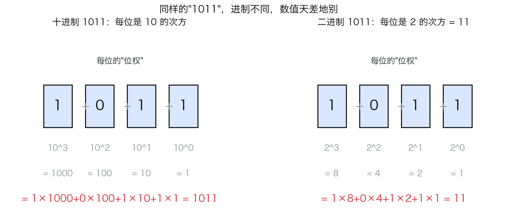
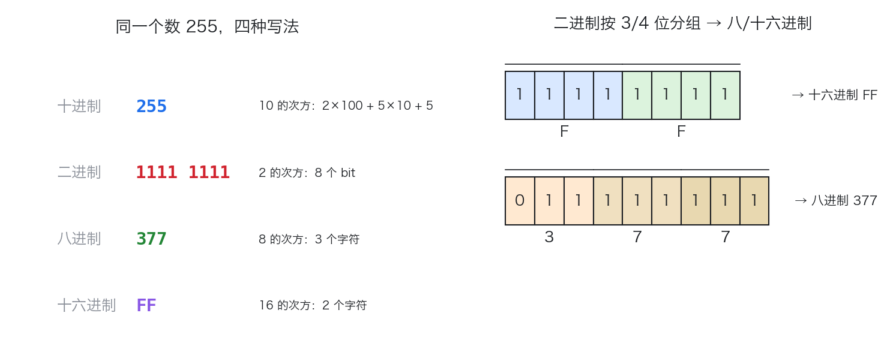
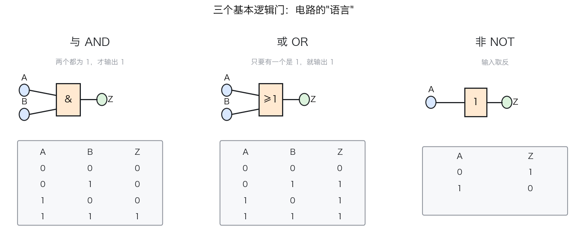
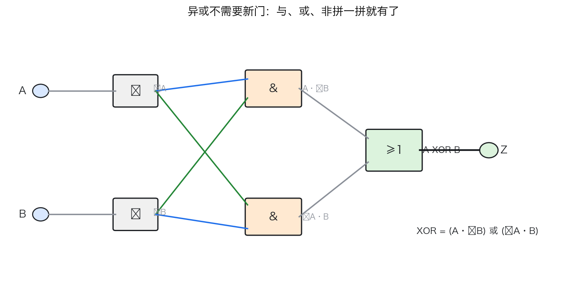
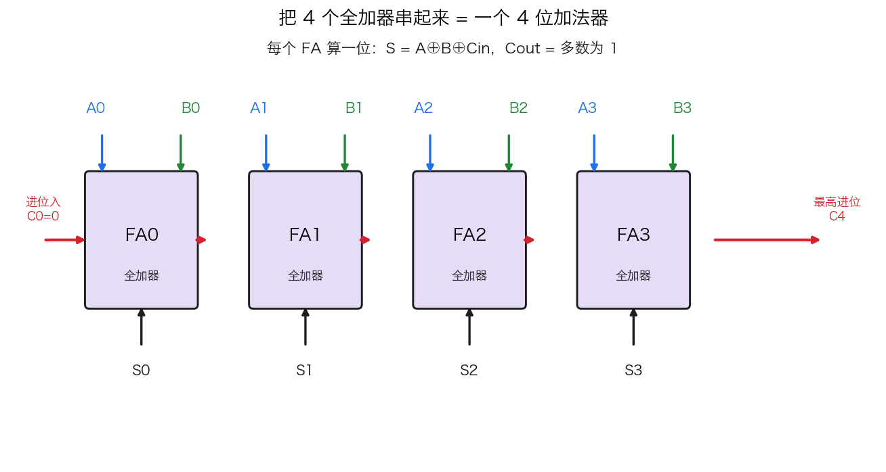
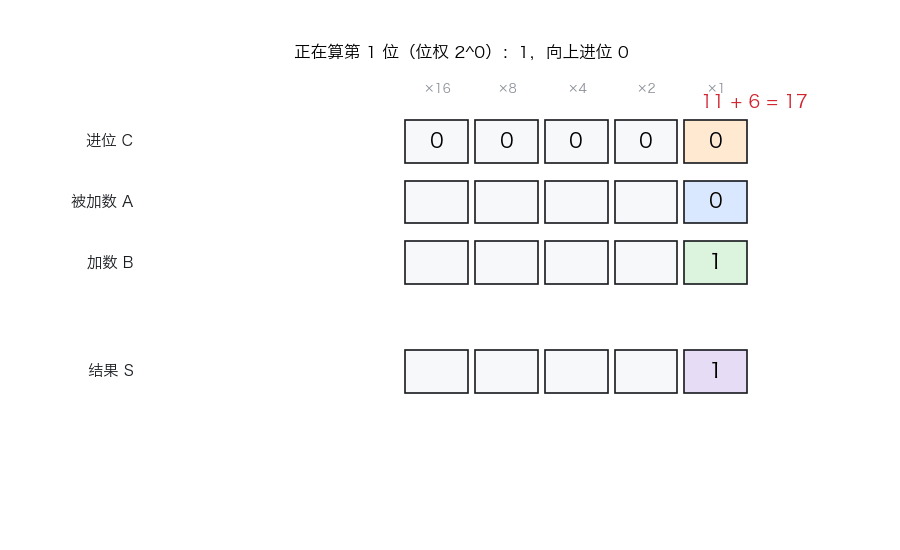
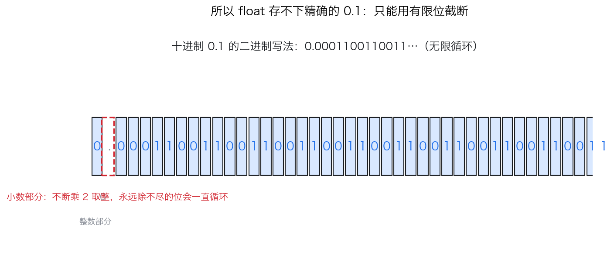

你有没有想过这样一个问题：你手机上某张"图片"，在计算机内部到底是一堆什么？答案是：一堆 0 和 1。不是"一堆像 0 和 1 的东西"，就是字面意义上的一长串 010011000111...。
可能有点反直觉的是，不管是文字、图片、声音、游戏，还是你正在读的这篇文章，到了计算机底层，全都是 0 和 1。那问题就来了：光有 0 和 1，计算机凭什么能"算"，能"存"，最后能跑出千奇百怪的软件？
这篇文章就顺着这条线，从物理一路讲到编程语言：为什么是二进制 → 二进制怎么表示数 → 二进制怎么计算（逻辑门、加法器）→ 二进制怎么变成各种数据类型 → 不同编程语言处理这些类型时为什么天差地别。
为什么计算机用二进制，而不是十进制
你估计猜到了答案的一半：因为电路只擅长区分两种状态。
你当然可以让一个灯泡表示 0~9 十种亮度来代表十进制，但问题是一旦电压稍有波动、电线有点老化、温度有点变化，"亮度 7"和"亮度 8"就不太好分清了。可是"亮"和"灭"——或者更准确地说"高电压"和"低电压"——这两种状态，晶体管可以切换得又快又稳。
| 抽象 | 物理实现 |
|---|---|
| 0 | 低电压（约 0V） |
| 1 | 高电压（约 3.3V / 5V） |
所以二进制的本质，是用一个"开关"的两种状态去表达信息。一盏灯亮是 1、灭是 0；一格磁带磁化是 1、没磁化是 0；一张光盘有个坑是 1、没坑是 0。理解这一点之后，下面所有内容都顺理成章了。
二进制怎么表示数
我们在十进制里写 1011，意思是"1 个千 + 0 个百 + 1 个十 + 1 个一"，每一位的"位权"是 10 的次方。二进制完全一样，只是把"10 的次方"换成了"2 的次方"：

图 1. 位权。 同样写着 1011：十进制里每位是 10 的次方，等于一千零一十一；二进制里每位是 2 的次方（8、4、2、1），等于 11。进制不同，数值天差地别。
二进制里最基本的位权就是：1、2、4、8、16、32、64、128……每一项都是前一项的两倍。所以"把十进制转二进制"其实就是问：这个数能被哪些 2 的次方凑出来？
用 Python 三行就能搞定（bin() 是内置函数，下面还附了手算过程）：
print(bin(11)) # 0b1011
print(0b1011) # 11，前缀 0b 表示二进制
# 手动拆：每一位就是 2 的次方
bits = [1, 0, 1, 1] # 从高位到低位
value = sum(d * 2**i for i, d in enumerate(bits[::-1]))
print(value) # 11
顺便记一个很有用的心算：2^10 = 1024，大约等于一千。所以"1KB"在计算机里是 1024 字节，不是整 1000（硬盘厂商喜欢用1000）——这个"约等于"的偏差，就是为什么你买的 1TB 硬盘实际可用只有约 931GB。
八进制与十六进制：二进制的"缩写"
二进制有个很烦人的毛病：太长了。一个 8 位的数写起来还行，64 位的整数要写 64 个 0 和 1，谁也受不了。于是计算机科学家想了个偷懒的办法：既然 8 = 2³、16 = 2⁴，那就把二进制每 3 个 bit、每 4 个 bit 打成一包，给每一包起一个短名字：
- 每 3 个 bit 一组，只有 0~7 共 8 种组合 → 叫八进制（octal）；
- 每 4 个 bit 一组，只有 0~15 共 16 种组合 → 叫十六进制（hexadecimal）。
所以八进制、十六进制不是另一种数，而是二进制的"压缩写法"——因为底数分别是 2 的次方，它们和二进制之间可以无损、自由地互相转换。

图 2. 八进制与十六进制。 左图：同一个数 255 用四种进制写出来，进制越大写起来越短；右图：二进制按 4 位一组得到十六进制（1111 1111 → FF），按 3 位一组得到八进制（011 111 111 → 377），分组即转换。
为什么偏偏是 3 和 4？因为 2³ = 8、2⁴ = 16：3 个 bit 恰好能表示 0~7（八进制的全部数字），4 个 bit 恰好能表示 0~15（十六进制的全部数字）。于是"二进制 ↔ 八/十六进制"就变成了纯粹的"分组翻译"，根本不用算。十六进制从 10 开始用字母：A=10, B=11, C=12, D=13, E=14, F=15，对应关系如下：
| 二进制 | 十六进制 | 二进制 | 十六进制 |
|---|---|---|---|
| 0000 | 0 | 1000 | 8 |
| 0001 | 1 | 1001 | 9 |
| 0010 | 2 | 1010 | A |
| 0011 | 3 | 1011 | B |
| 0100 | 4 | 1100 | C |
| 0101 | 5 | 1101 | D |
| 0110 | 6 | 1110 | E |
| 0111 | 7 | 1111 | F |
在 Python 里三种转换都是内置函数：
x = 255
print(bin(x)) # 0b11111111 二进制
print(oct(x)) # 0o377 八进制
print(hex(x)) # 0xff 十六进制
print(int("ff", 16)) # 255，按十六进制解释字符串
print(int("377", 8)) # 255，按八进制解释字符串
为什么程序员整天看见 0x 开头的东西？因为内存地址、二进制数据、颜色值这类"原始字节"，用十六进制写比二进制短一半还多。比如 CSS 里的颜色 #FF0000 就是红色——FF 表示红色的亮度拉满，00 00 表示绿、蓝为 0。你看到的每一个十六进制字符，背后都是 4 个 bit。
二进制怎么计算：从逻辑门到加法器
知道了怎么"表示数"，接下来是最关键的问题：计算机是怎么"算"的？ 说白了，计算机里根本没有"算数"这个神秘动作——它只有逻辑。一切算术，都能拆成几个最基本的逻辑操作。
逻辑门：电路的"语言"
有三个最基本的逻辑门，它们各自只有一张小小真值表：

图 3. 三个基本逻辑门。 与门 AND：两个输入都是 1，输出才是 1（一票否决制）；或门 OR：只要有一个是 1，输出就是 1；非门 NOT：输入取反。图里每个门都附了真值表。
用 Python 模拟这三张真值表，你甚至不需要任何硬件：
def AND(a, b): return a & b # 与：两个都要是 1
def OR(a, b): return a | b # 或：有一个是 1 就行
def NOT(a): return 1 - a # 非：取反
print(AND(1, 1), AND(1, 0)) # 1 0
print(OR(1, 0), OR(0, 0)) # 1 0
print(NOT(1), NOT(0)) # 0 1
你可能觉得这太简单了，但请记住：计算机里所有的"智能"，都是几亿个这种"蠢门"组合出来的。
异或：三个门就能拼出来
不过你可能已经注意到，后面半加器里会用到一个叫"异或门 XOR"的东西——两个输入不一样时输出 1。它是不是第四个"基础门"？不是。异或完全可以用已经有的与、或、非三个门拼出来，不需要任何新零件。
异或的意思就是"不一样才为 1"。那什么情况下 A、B 不一样？
- A 是 1 且 B 是 0：
A AND NOT(B) - A 是 0 且 B 是 1：
NOT(A) AND B
这两种情况，任一种成立都算"不一样"，所以再把它们用"或"连起来：

图 4. 异或 = 与、或、非的排列组合。 A 和 ¬B 相与、¬A 和 B 相与，两路结果再相或——异或就出来了。图中蓝色是"A"这一路、绿色是"¬"这一路的走线。
用代码写出来，就是前面那三个"蠢门"的排列组合：
def AND(a, b): return a & b
def OR(a, b): return a | b
def NOT(a): return 1 - a
def XOR(a, b):
return OR(AND(a, NOT(b)), AND(NOT(a), b)) # 只用与、或、非
for a in (0, 1):
for b in (0, 1):
print(f"{a} XOR {b} = {XOR(a, b)}")
# 输出：0 XOR 0 = 0；0 XOR 1 = 1；1 XOR 0 = 1；1 XOR 1 = 0
这正是"计算机里所有智能都是蠢门组合"的第一课：连"异或"都不是新零件，只是把与、或、非拼一拼。 而它，恰好就是下面半加器里"和位"的核心。
半加器：一位加一位
二进制里最简单的加法是：一位加一位，可能有四种情况：0+0=0、0+1=1、1+0=1、1+1=2。前三个好办，最后这个 1+1=2 在二进制里是 10——结果是 0，还要向高一位进 1。
所以"一位加法"需要同时算出两个东西：和位（sum）和进位（carry）。观察一下真值表就能发现：
- 和位：两个输入不一样时是 1 → 这是异或门 XOR；
- 进位：两个输入都是 1 时是 1 → 这是与门 AND。
这个组合就叫半加器，两行代码的事：
def AND(a, b): return a & b # 与
def XOR(a, b): return a ^ b # 异或
def half_adder(a, b):
return XOR(a, b), AND(a, b) # (和位, 进位)
print(half_adder(0, 0)) # (0, 0)
print(half_adder(1, 1)) # (0, 1) —— 1+1=2，即二进制 10
全加器：带上进位的加法
半加器有个缺陷：它不理会来自低位的进位。可真实的多位加法里，第 3 位算的时候，第 2 位可能正好向它进了个 1。所以得做一个"三位相加"的电路：两个加数位 + 一个低位进位，算出和位 + 新高位进位——这就是全加器。
把 4 个全加器串起来，低位的进位接高位的进位输入，就得到一个 4 位加法器：

图 5. 4 位加法器。 每个 FA 是一个全加器：竖着进来的是 A 位和 B 位，横着串起来的是"进位链"（低位算完，进位送给高位）。最左边 C0 补 0，最右边 C4 是最高位进位。整条链就是加法器。
这个"全加器"用代码实现也只要几行——它正好是两个半加器加一个或门拼出来的。更进一步，把 4 个全加器串起来（低位进位喂给高位的 cin），就是一台能算 4 位加法的"加法器"：
def AND(a, b): return a & b
def OR(a, b): return a | b
def XOR(a, b): return a ^ b
def half_adder(a, b):
return XOR(a, b), AND(a, b) # (和位, 进位)
def full_adder(a, b, cin):
s1, c1 = half_adder(a, b) # 两个半加器……
s2, c2 = half_adder(s1, cin) # ……再加一个低位进位
return s2, OR(c1, c2) # (和位, 进位)
# 全加器真值表：8 种情况全对
for a, b, cin in [(0,0,0),(0,0,1),(0,1,0),(0,1,1),(1,0,0),(1,0,1),(1,1,0),(1,1,1)]:
s, c = full_adder(a, b, cin)
print(f"{a}+{b}+{cin} = 和{s} 进位{c}")
# 用 4 个全加器串成 4 位加法器：算 1011 + 0110
def add4(a, b): # a、b 是低位在前的 bit 列表
out, cin = [], 0
for i in range(4):
s, cin = full_adder(a[i], b[i], cin) # 上一位的进位传进来
out.append(s)
return out + [cin]
result = add4([1,1,0,1], [0,1,1,0]) # 1011 + 0110（低位在前）
print("1011 + 0110 =", "".join(map(str, result[::-1])), "(二进制)")
print("十进制结果：", sum(b << i for i, b in enumerate(result)))
# 输出：1011 + 0110 = 10001 (二进制)；十进制结果：17
注意看 add4 里那个 cin——它就像图 3 里的那条红色进位链：一位算完，进位被"喂"给下一位。这一小段 Python，就是 CPU 里加法器的完整逻辑。
下面这个动画演示了这条"进位链"是怎么工作的——算 1011 + 0110，从最低位（位权 1）开始，逐位计算，每位的进位会"接力"传给下一位：

图 6. 二进制加法动画。 从最右边一位开始算：1+0=1 无进位，第二位 1+1=0 进 1，第三位 0+1 再+进位 1=0 进 1……直到算出结果 10001（17）。注意每一列的进位都会"涨"到左边一列。
到这一步，"计算机是怎么算数"这个问题就有了一个非常硬核又非常朴素的答案：所谓加法，就是一堆开关（晶体管）按逻辑门的规则互相勾连；所谓算数，就是把这个"加法器"不断做大、做快。 减法（补码）、乘法（移位累加）、除法（试商）都可以在加法器的基础上搭出来。CPU 里那个负责算数的部件，就叫 ALU（算术逻辑单元），本质就是一台超大的加法器加上一堆逻辑门。
从"数"到"一切数据"：编码
现在我们已经能让计算机"算 0 和 1"了。但照片、文字、声音，怎么看都不是 0 和 1。怎么办？答案是编码——人为约定一套规则，让二进制和真实世界一一对应：
| 数据 | 怎么编码成二进制 |
|---|---|
| 整数 | 直接就是二进制（5 → 101） |
| 小数 | 二进制小数/浮点数（如 0.1 → 0.000110011...） |
| 字符 | 查表：每个字符一个编号（ASCII / Unicode，如 A → 65 → 1000001） |
| 图片 | 每个像素拆成 RGB 三个数（红/绿/蓝亮度） |
| 声音 | 每秒采样几万次，每个采样点一个数 |
| 程序 | 指令本身也有编号，CPU 照着编号干活 |
关键要理解的是：同一串二进制，可以"解释"成任何东西。 01000001 可以是一个整数 65，也可以是字符 'A'，也可以是一张图片里某个像素的某个颜色分量——全看你打算把它当什么。
这时候，"数据类型"这个概念就出现了。它的本质就是一句话：
数据类型 = 告诉程序"这一串二进制该怎么解释、占多大地方、能干什么"。
数据类型有哪些
常见的"基础数据类型"就那么几种，每种对应一种"人类世界里最基本的信息"：
常见的"基础数据类型"就那么几种，每种对应一种"人类世界里最基本的信息"，它们占的内存大小差别很大：
| 类型 | 代表语言里的名字 | 表示什么 | 典型大小 |
|---|---|---|---|
| 布尔 bool | bool / boolean |
真 / 假 | 1 字节 |
| 字符 char | char |
一个字符 | 1 字节（ASCII） |
| 整数 int | int / integer |
整数（有正负） | 4 或 8 字节 |
| 无符号整数 | unsigned int |
只有非负的整数 | 4 字节 |
| 浮点 float | float / double |
带小数的数 | 4 或 8 字节 |
| 字符串 string | str / String |
一串字符 | 变长 |
一个关键观察：同一串 0 和 1，类型不同，占的内存和解释方式就完全不同。 比如 01000001 在 char 里是字符 'A'，在 int 里就是数字 65。另外注意 Python 的整数是个"对象"，光一个数就占约 28 字节——因为它要管任意大，牺牲内存换"永远够用"（下文讲语言差异时会再提）。
在这个基础上，还有由基础类型拼出来的复合类型：数组（一堆同类型排成一排）、结构体/类（把不同类型打包成一个"档案袋"）、指针/引用（记住"数据放在哪"）、枚举（给一组常量起名字）、联合体（同一块内存换着花样用）。但追根到底，它们都是"0 和 1"按不同规则的组织方式。
一个 32 位整数 int 能表示的范围是 -2147483648 ~ 2147483647——为什么是这么个怪数？因为 32 位里最高一位留作符号，剩下 31 位能表示 \(2^{31}\) 个数，一半给负数、一半给非负，所以上限正好是 \(2^{31}-1 = 2147483647\)。这个"上限"能不能撑住，直接导致了下面要讲的语言差异。
不同编程语言的类型差异
同一个"整数"、"浮点"，在不同编程语言里差别可以非常大。我们从四个维度来看。
差异一：静态类型 vs 动态类型
- 静态类型（C、Java、Go、Rust）：变量是什么类型，编译的时候就定死了，不许变。
- 动态类型（Python、JavaScript）：变量只是"贴了个名字"，类型运行的时候才知道，今天装整数、明天装字符串都行。
# Python：动态类型，同一个变量想装什么都行
x = 10 # 现在是整数
x = "hello" # 下一秒变成字符串，完全合法
// C：静态类型，类型写在声明里，想改都不行
int x = 10;
x = "hello"; // 编译报错：不能把字符串塞进 int
动态类型写起来爽，但类型错误往往运行到那一步才爆；静态类型写起来啰嗦，但编译期就把一堆低级错误挡在门外。
差异二：强类型 vs 弱类型
- 强类型（Python、Java）：类型不匹配就报错，绝不偷偷"变魔术"。
- 弱类型（C、JavaScript）：类型不匹配时会自动转换（隐式转换），经常"好心办坏事"。
最典型的例子是 JavaScript 的 +——它看情况决定是"加法"还是"拼字符串"：
// JavaScript：弱类型，加号会自动"变魔术"
console.log(1 + "2"); // "12" 数字被自动转成字符串拼起来了
console.log("5" == 5); // true 宽松相等：字符串和数字被自动转成一样
console.log("5" === 5); // false 严格相等：类型不同就是不同
而 Python 里 "5" + 5 会直接抛 TypeError，因为它拒绝"猜测你的意图"。
差异三：整数范围——会不会溢出
这是最容易踩的坑。C 的 int 是固定 4 字节，加过头就"绕回去"：
#include <stdio.h>
int main() {
int x = 2147483647; // int32 的最大值
printf("%d\n", x + 1); // 溢出！输出 -2147483648
printf("int=%zu 字节, float=%zu, double=%zu, char=%zu\n",
sizeof(int), sizeof(float), sizeof(double), sizeof(char));
return 0;
}
Python 的整数是"任意精度"：不够用就自动多占几个字节，永远不溢出：
x = 2147483647
print(x + 1) # 2147483648，自动变大，不会绕回去
print(10**100) # 一百位数也能存，想多大就多大
Python 整数牺牲内存，换来了"永远够用"。而 C 选择固定 4 字节，换来的是速度和可预测的内存布局。
差异四：浮点精度——所有语言共同的坑
小数（浮点数）在所有语言里都面临同一个问题：0.1 在二进制里是无限循环小数，存不下，只能截断。所以：
print(0.1 + 0.2) # 0.30000000000000004
为什么是 0.30000000000000004 而不是 0.3？看这个图就明白了——十进制的 0.1 转成二进制，会一直除不尽，永远写不完：

图 7. 0.1 的二进制表示。 十进制 0.1 的二进制是 0.00011001100110011...，无限循环。浮点数只有有限位（float 32 位、double 64 位），只能截断，所以存下的其实是一个"很接近 0.1 但不是 0.1"的数，两个这种数加一起，误差就露出来了。
不同语言在这件事上唯一的区别是"精度档位"：
- C：有
float（4 字节，约 7 位有效数字）和double（8 字节，约 15 位有效数字），自己选； - Python：只有一个
float，其实就是 8 字节的 double； - JavaScript：连整数都是 double——所以你写
0.1+0.2得到0.30000000000000004，而9007199254740993这种大整数会悄悄变不准。
语言"性格"一览
把上面这些差异汇总成一张表（"静态/动态"管类型什么时候定，"强/弱"管类型会不会偷偷转换）：
| 语言 | 静态 / 动态 | 强 / 弱 | 一句话特点 |
|---|---|---|---|
| C | 静态 | 偏弱 | 类型就是那几个字节，直接操作内存，快但危险 |
| Java | 静态 | 强 | 编译期查类型，跑在虚拟机上，严谨稳重 |
| Go | 静态 | 强 | 带类型推断，编译快，适合写后端服务 |
| Rust | 静态 | 强 | 最严的类型系统，既要性能又要安全 |
| Python | 动态 | 强 | 随手写、运行期才定类型，但拒绝乱猜 |
| JavaScript | 动态 | 弱 | 灵活到"加号都会变魔术"，坑多但生态巨大 |
这张表不是"谁好谁坏"，而是取舍：写操作系统、游戏引擎，你希望编译期就把类型查死（C、Rust）；做数据分析、写脚本，你更想要随手就写、运行期再说的爽快（Python）。
语言的类型差异，本质还是内存问题
说到底，为什么会有这些差异？因为底层的二进制和内存布局是唯一的，语言只是给了不同的"包装"：
- C 直接暴露内存：
int就是那 4 个字节，程序员自己看着办； - Java 在中间加一层"虚拟机"，类型是声明出来给编译器检查用的；
- Python 一切皆对象：每个数据都是一个"对象头 + 值"，所以慢、占内存，但安全、好用；
- 静态语言的"类型"在编译完就消失了（变成机器码里的固定字节数），动态语言的"类型"要一直带到运行期。
全链路：从晶体管到程序
把所有零件串起来，就是一整条链条，每一层都为上一层铺路：
- 物理层：晶体管能稳定表示两种电压 → 这就是 0 和 1；
- 逻辑层：与/或/非三个门能组合出任何逻辑；
- 运算层：加法器 + 进位链，让"开关"能算数；
- 存储层：内存把成千上万个 0/1 保存下来；
- 解释层：数据类型规定"这串 0/1 是什么、多大、怎么用"；
- 语言层：编程语言把这层解释封装成
int、float、str等"给人看的词"； - 应用层：你用这些词写出程序，程序变成 0/1 跑在芯片上。
所以回到开头的问题："那张手机照片是什么？"答案是：手机照片 = 一串 0 和 1；这串 0 和 1 是 '图片' 这种数据类型；'图片' 是图像软件给这串二进制起的名字；而计算机算它的过程，不过是几十亿个开关按逻辑门在飞快地开合。 从一盏灯，到一整个数字世界，中间没有一步是神秘的。
想亲手验证这条链，可以试试：把 bin(65) 的输出 0b1000001 拿去对照 ASCII 表，你会发现它正好是字符 'A'——你看，数字、字符、图片，在你眼里不同的东西，在计算机眼里都只是"一串开关"。